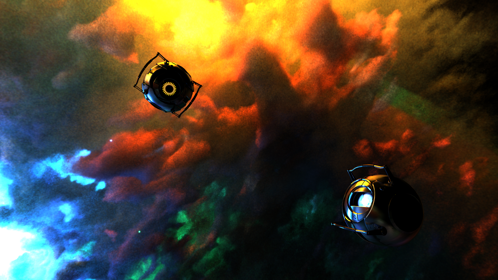

Raytracer from scratch (2023)

During the Advanced Graphics course, I developed a raytracer from scratch together with another student. The program can render scenes with different materials such as glass and mirrors, applied to different shapes such as spheres and triangles, and using different raytracing algorithms such as the Whitted algorithm and the Monte Carlo algorithm (and a number of debug algorithms). Creating an algorithm to build and use a BVH to speed up the rendering process was also part of the assignment.
After implementing the basic functionality for the raytracer and BVH, we added additional features such as loading 3D models from OBJ files, supporting textured models, implementing glossy materials, and implementing the process of BVH building on the GPU.
Finally, I implemented the paper "A null-scattering path integral formulation of light transport" by Miller *et al.* to render volumetric clouds in a scene, with the density of the cloud at a position determined using a custom cloud-generation algorithm developed by my teammate. In addition to the basic rendering of volumes using said technique, I also added support for next-event estimation within the volume.
With the many types of materials, shapes, and algorithms that all need to be swapped out depending on scene and user settings, the project required not only the math typical of rendering: proper code organisation was almost as important, and a lot of our effort went into keeping the program expandable to keep it easy to add new shapes, materials, and algorithms.
Feel free to contact me if you want to chat! Send me an email at mina.spijk@sindarin27.net.